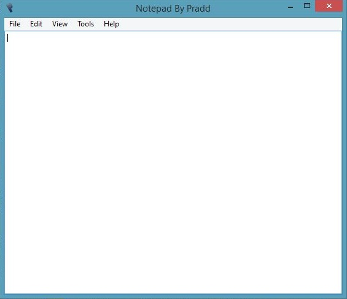

Notepad By Pradd 3.0 - The Coolest Python based editor
Notepad By Pradd (Pradipta) is an Open Source Text Editor for Windows which is created using Python and provides numerous features over Notepad namely:
Notepad Clone with more features and runs on Python!
Signature Support and Sticky Notes
HTML Templates built in
Launch code files directly in default program
Highlighter Mode
Keyboard shortcuts to insert custom signature

Source Code is available on GitHub here. This Program has been tested on Windows 7/8 and 8.1 but should function on XP and Vista as well. Click the Button below to download: